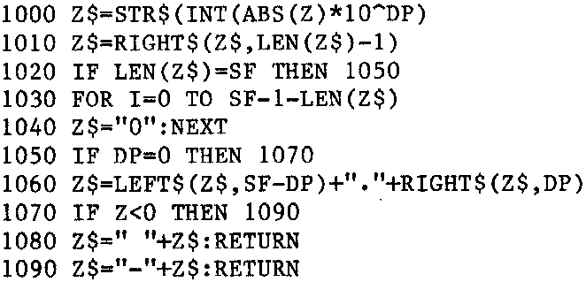

INMC 80 News |
February–April 1981 · Issue 3 |
| Page 43 of 55 |
|---|
Would you care to help or advise me or even try the modification and make it work? I’m sure other members of the INMC would be interested.
Yours sincerely
S. C. Willmott
Whilst on the subject of video problems, about the same time as the above was recieved, we had a little note from D. R. Humphries of Maypole Heath, Canterbury. Many N2 owners will be aware of the “nasty” shape of the LD signal to IC65 which manifests itself by making the video display the front half of each character twice. The recommended cure is to zap a 100pF C from pin 1 of IC65 to ground. Not very elegant!! Mr. Humphries suggests changing IC71 from a 74LS20 to a 74LS13. This works well, and is nice and tidy. The same trick works with the shifted video blanking problem that can occur when IC55 is a bit slow. This time IC55, the 74LS20 may be replaced with a 74LS13.
The routine involves deciding the largest number of significant figures to the left of the decimal point and assigning this to variable SF. Then decide how many places to the right and assign this to DP (SF > DP please). The variable is assigned to Z and is returned in Z$.
For the last two days I’ve sat at the keyboard of my computer, typing up stuff for this issue, I’ve a file an inch think in front of me, full of readers’ letters and articles. What really depresses me is the number of beautifully written (and in many cases, illustrated) articles on “How I built my Nascom and made it work”, which of course we will never print. You see, if you think about, you didn’t learn about the INMC until AFTER you’d built your Nascom, ‘cos by the time you had written to us, and maybe even got some back issues, you’d already rushed ahead and got it to work. Hadn’t you? So much as we like to encourage articles, no more on constructing Nascoms please. Because by the time we could put them into print we would only be preaching to the converted. Thanks for all those construction articles we haven’t printed (we have about 30). It’s not ‘cos we don’t like you, or that they aren’t good enough, it’s just that they are irrelevant.
I wondered why they kept coming, then I realised that it was because we hadn’t said we didn’t want them. Almost every Nascom owner has constucted his (or her, any female members out there?) Nascom and is justifiably proud, and that is probably, then, one thing almost every member is qualified to write about. If on the other hand, you really want to know how much trouble the next guy had, then let us know. We’ll print’em all as a serial.
| Page 43 of 55 |
|---|